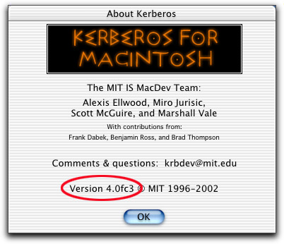
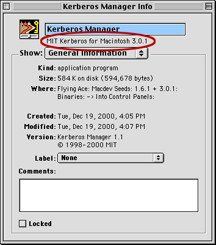

|
Identifying the Version of Kerberos for Macintosh |
Sometimes, for checking compatibility or reporting
bugs, it is important to identify which version of Kerberos for
Macintosh you are using.
Follow the steps below to identify the version number.
Mac OS X
- Open the Kerberos application (usually found in either
/System/Library/CoreServices or /Applications/Utilties ).
- Choose About Kerberos from the Kerberos menu.
- The version number is displayed near the bottom of the about
dialog, just above the OK button.

Mac OS 8 & 9
- From the Apple menu, choose Control Panels.
Result: The Control Panels window is displayed.
- Locate either the "Kerberos Manager" or "Kerberos" control
panel (only one should be installed at any time). Viewing the
folder's files as a list may be helpful.
- Select the "Kerberos Manager" (or "Kerberos") control
panel.
- From the File menu, choose Get Info; or press
<command>-I.
Result: The "Kerberos Manager Info" (or "Kerberos Info")
window is displayed.

- Look at the line of text just below the file's name, near the
top (see red circle in illustration above). This is the version
number of Kerberos for Macintosh.
Kerberos for Macintosh version numbers are 2.0 or greater. If the
number you have read is 1.x, that is the Kerberos Manager version,
not the Kerberos for Macintosh version number. Try again!